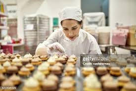
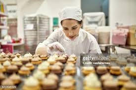
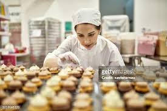

.jpg) 

we bake all kind of snacks, cake and derset
At our bakery, we're not just in the business of baking; we're in the business of crafting unforgettable experiences through the art of pastry-making. Here's what sets us apart:
* Passion for Perfection: Behind every delectable treat is a team of passionate bakers dedicated to perfection. From the crackle of a freshly baked baguette to the delicate layers of a meticulously crafted cake, we pour our hearts into every creation.
* Local Ingredients, Global Flavors: We believe in celebrating the best of both worlds. That's why we source our ingredients locally whenever possible, ensuring freshness and supporting our community. But when it comes to flavor, we take inspiration from around the globe, infusing traditional recipes with innovative twists that keep taste buds tingling.
* Personal Touch: Our bakery isn't just a place to pick up pastries; it's a haven of hospitality. We greet every customer with a smile, eager to share our love for baking and help you find the perfect treat for any occasion. Whether you're craving a cozy morning croissant or a show-stopping dessert for a celebration, we're here to make it happen.
* Creative Collaboration: Innovation is the heartbeat of our bakery. We love collaborating with our customers to bring their wildest dessert dreams to life. Have a flavor combination you've been itching to try? Let's make it happen together! Our bakers thrive on turning ideas into edible works of art that leave taste buds dancing and hearts full.
* Sustainability Commitment: As stewards of the environment, we're committed to reducing our ecological footprint. From eco-friendly packaging to minimizing food waste through thoughtful production practices, we're constantly seeking ways to bake responsibly and preserve the planet for future generations.
* So, whether you're a longtime fan or a curious newcomer, we invite you to step into our bakery and experience the magic for yourself. From the first bite to the last crumb, we guarantee you'll taste the difference that passion, creativity, and a sprinkle of joy can make. Thank you for choosing Hugosluv where every pastry tells a story worth savoring.
